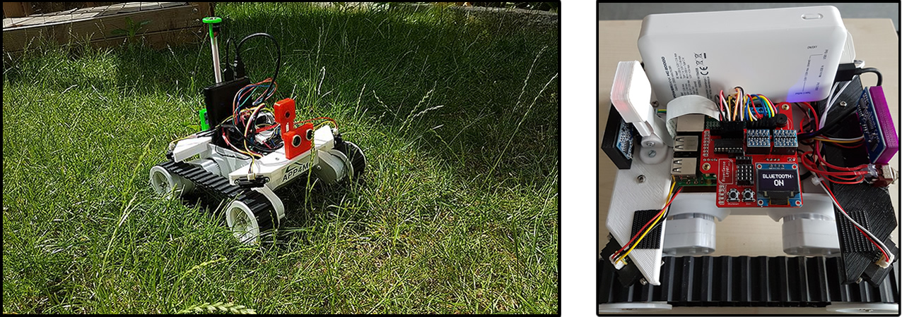
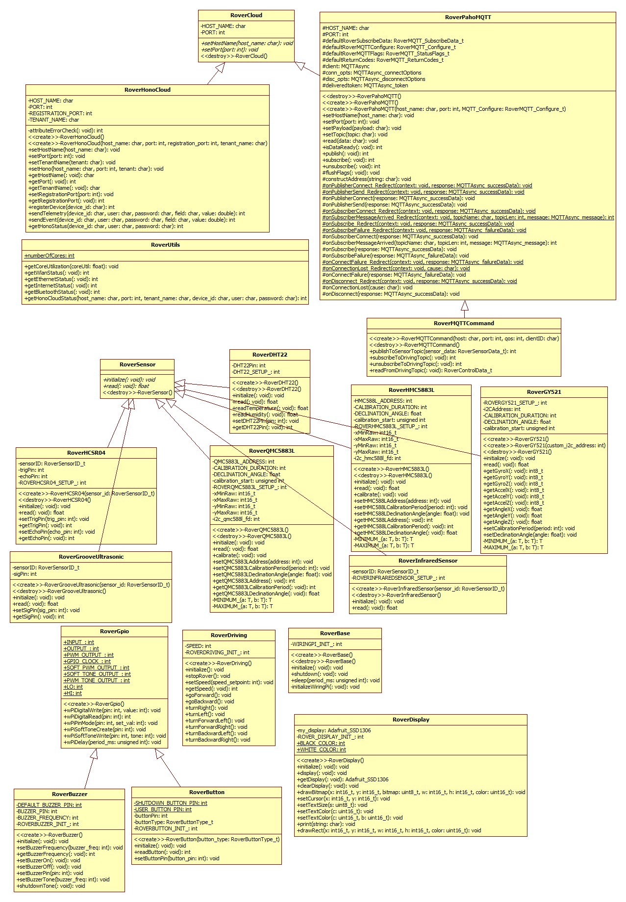

roverapp and Rover API Info
Rover software, called roverapp features a multi-threaded (POSIX threads or Pthreads) C/C++ implementation that runs on Linux-based embedded single board computers (such as Raspberry Pi). Rover features countless threads dedicated to communication infrastructure, sensor driving, display unit (such as OLED displays) utilization, bluetooth communication, image processing, and behavior modes (such as Parking, Adaptive Cruise Control, Manual Driving, and Booth Modes). It also features drivers for sensors such as magnetometers, accelerometers, various ultrasonic sensors, and camera modules. Furthermore, OLED display, buttons, a buzzer are utilized.
Roverapp builds and contains the Rover API, which is able to handle subset of its functionality. Example functionality covered in Rover API is given below:
- RoverBase RoverBase class provides basic rover functions such as initialization, sleeping, and shutting down.
- RoverDisplay contains the member functions to control OLED display on the Rover. This class is a wrapper API for Adafruit_GFX and Adafruit_SSD1306 libraries.
- RoverDriving contains the member functions to drive the rover using its motors.
- RoverGpio class provides the member functions related to low-level pin driving. This class wraps wiringPi library and is inherited by RoverButton and RoverBuzzer classes.
- RoverBuzzer class provides the member functions related to embedded buzzer on the rover.
- RoverButton class contains member functions to access Shutdown button, User button, and customly installed buttons on the rover.
- RoverUtils contains member functions to retrieve connectivity status and core utilization of the rover. This class wraps status_library lib, developed for the rover-app.
- RoverSensors is a pure abstract class defining the interface between sensor classes of the rover.
- RoverDHT22 is a class that is inherited from RoverSensor abstract class. RoverDHT22 class contains member functions and variables to set up and read from DHT22 temperature and humidity sensor that is embedded on the rover.
- RoverGrooveUltrasonic is a class that is inherited from RoverSensor abstract class. RoverGrooveUltrasonic class contains member functions and variables to set up and read from Groove ultrasonic sensors that are embedded on the rover.
- RoverHCSR04 is a class that is inherited from RoverSensor abstract class. RoverHCSR04 class contains member functions and variables to set up and read from HCSR-04 ultrasonic sensors that are embedded on the rover.
- RoverInfraredSensor is a class that is inherited from RoverSensor abstract class. RoverInfraredSensor class contains member functions and variables to set up and read from SHARP infrared sensors that are embedded on the rover.
- RoverGY521 is a class that is inherited from RoverSensor abstract class. RoverGY521 class contains member functions and variables to set up and read from GY521 accelerometer that is embedded on the rover.
- RoverHMC5883L is a class that is inherited from RoverSensor abstract class. RoverHMC5883L class contains member functions and variables to set up and read from HMC5883L bearing sensor that is embedded on the rover.
- RoverCloud class is a purely abstract interface for cloud communication classes.
- RoverQMC5883L is a class that is inherited from RoverSensor abstract class. RoverQMC5883L class contains member functions and variables to set up and read from QMC5883L bearing sensor that is embedded on the rover.
- RoverHonoCloud contains the member functions to connect and send data to Eclipse Hono instance using several parameters such as host name, port, tenant name, user name, and password. This class wraps hono_interaction library for Rover-specific interactions.
- RoverPahoMQTT contains member functions to use rover as a client and to publish / subscribe to Eclipse Paho MQTT server topics.
- RoverMQTTCommand class is an implementation class -privately- extending RoverPahoMQTT for rover-specific topic subscription and publishing using JSON for parsing and using predefined type variables such as RoverControlData_t and RoverSensorData_t.

UML Diagram Overview

Updated: 11.12.2017
Rover API Example Usage
The following is an example C++ application using some of the Rover API functions:
- Warning
- For more concreate examples please go to: https://github.com/app4mc-rover/rover-app/tree/master/src/examples
int main (void)
{
r_cloud.
setHono(
"localhost", 8080,
"DEFAULT_TENANT");
{
printf ("Registered device to Hono cloud using REST API successfully..\n");
}
if (r_cloud.
sendTelemetry(
"4711",
"myuser",
"mypassword",
"roverFront", 100.0) == 1)
{
printf ("Data sent to Hono cloud using REST API successfully..\n");
}
printf (
"Ultrasonic = [%f %f]\n", r_front.
read(),
printf (
"Infrared = [%f %f %f %f]\n", r_infrared0.
read(),
printf (
"Bearing with HMC5883L = %f\n", r_hmc.
read());
user_b.initialize();
if (user_b.readButton() == user_b.LO)
{
}
float util[4];
printf ("Utilization = [%f %f %f %f]\n", util[0], util[1], util[2], util[3]);
my_display.
print(
"INTERNET:");
{
}
else
{
}
rover_mqtt_conf.
topic =
"rover/RoverDriving/control/1";
rover_mqtt_conf.
username =
"sensor1@DEFAULT_TENANT";
rover_mqtt_conf.
password =
"hono-secret";
1883,
rover_mqtt_conf);
char payloadMsg[] = "Hi from rover!";
rover_mqtt.
setPayload (payloadMsg, strlen(payloadMsg));
rover_mqtt.
setTopic (
"rover/RoverDriving/control/2");
printf ("Publishing successful!\n");
else
printf ("Publishing unsuccessful!\n");
{
printf ("Subscribe successful!\n");
}
else
{
printf ("Subscribe unsuccessful!\n");
}
char data[50];
printf ("Received data=%s\n", data);
{
printf ("Unsubscribe successful!\n");
}
else
{
printf ("Unsubscribe unsuccessful!\n");
}
return 1;
}
To see the example code related to classes, you can select classes and see detailed descriptions.
Rover Documentation
Link: Rover Complete Documentation
- Copyright
- Copyright(C) 2017 IDiAL Institute, Fachhochschule Dortmund

 1.8.11
1.8.11